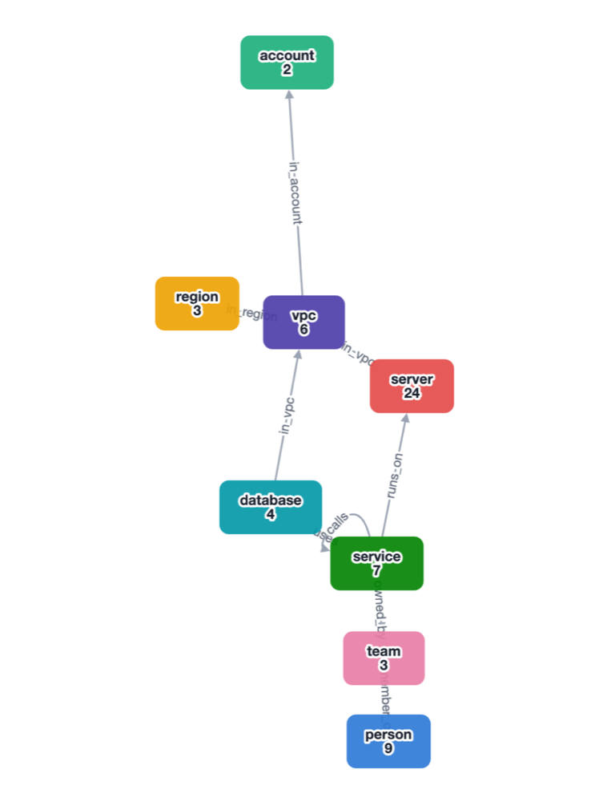
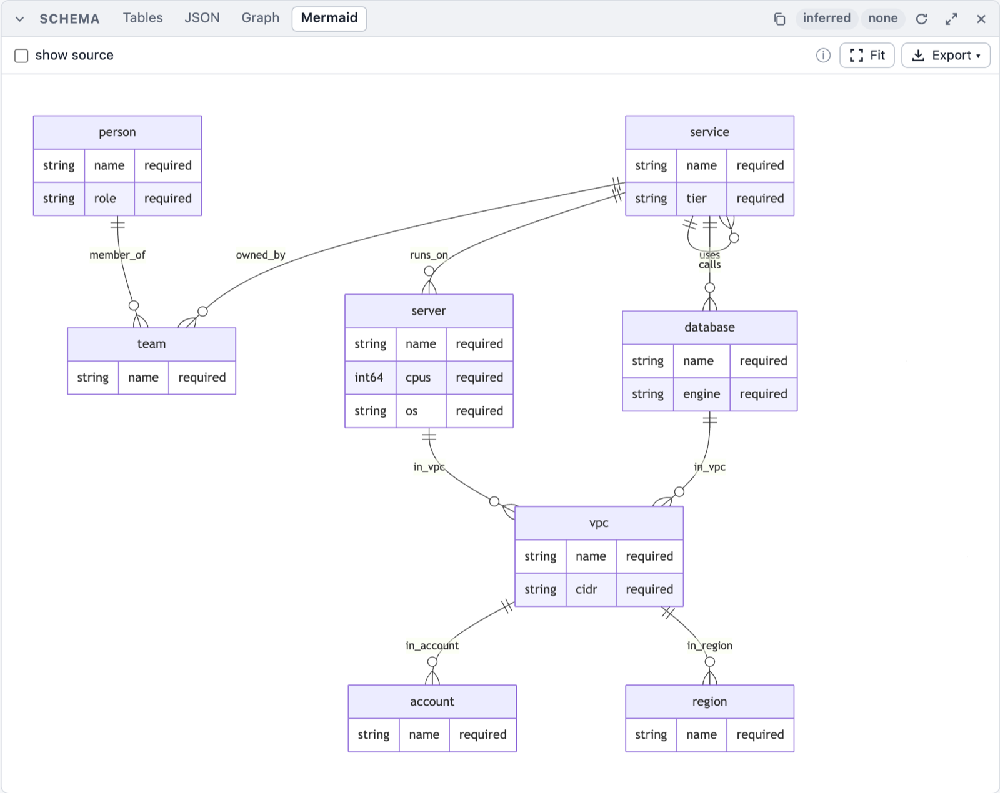
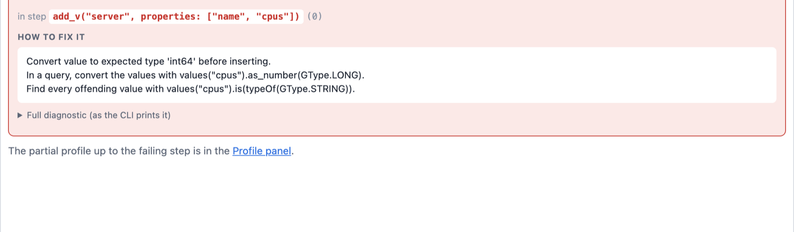

Schemas
A graph can store a schema: which vertex and edge labels exist, which properties they carry, of
which types and within which constraints, and how edges may connect labels. The schema is plain
data in one format, the same in Rust, the script DSL, Python and the playground: our envelope
outside, standard JSON Schema 2020-12 inside (a strict subset), so a model_json_schema() from
Pydantic can be pasted as a label's schema.
The rule behind enforcement: the storage owns consistency. Every operation that changes the graph passes the schema inside one storage call, never in a step, and every traversal is one unit of work: it is applied completely or not at all.
A first schema
g.set_schema(`{
"mode": "closed",
"vertices": {
"person": {"schema": {
"type": "object",
"properties": {
"name": {"type": "string", "minLength": 1},
"age": {"type": ["integer", "null"], "minimum": 0}
},
"required": ["name"]
}}
},
"edges": {
"knows": {"connections": [{"from": "person", "to": "person"}],
"schema": {"type": "object", "properties": {"weight": {"type": "number"}}}}
}
}`)
g.add_v("person").property("name", "Ann").next() // ok
g.add_v("person").property("age", -1).next() // error: age >= 0 (and name is required)
g.get_schema() returns the stored schema as a map (() without one), g.infer_schema() the
schema the data satisfies. Rendered as the final value of a session (the CLI, the playground) a
schema shows as a table; --format mermaid|plantuml|json|jsonschema|markdown|tree picks another
view.
Freeze the structure you have
A common way to start: build the graph without a schema, experiment until the shape is right, then freeze that shape so every later write has to follow it:
g.set_schema(g.infer_schema(), SchemaMode.closed) // or SchemaMode.open / SchemaMode.none
set_schema(schema, mode) stores schema with its mode replaced by mode (an inferred schema
has mode none, which enforces nothing). The mode is a SchemaMode token (SchemaMode.closed,
SchemaMode::closed) or one of the strings "none", "open", "closed"; validate_schema(schema, mode) is the dry run. SchemaMode is a reserved name in the script scope.
| Binding | Freeze |
|---|---|
| DSL | g.set_schema(g.infer_schema(), SchemaMode.closed) (also setSchema(.., "closed")) |
| Rust | let s = g.infer_schema()?.with_mode(SchemaMode::Closed); g_mut.set_schema(s)? |
| Python | graph.set_schema(graph.infer_schema(), mode="closed") |
| Playground | Schema panel: Freeze as open / Freeze as closed (shown while the graph stores no enforcing schema) |
What each mode freezes:
open: the labels and properties that exist get their types andrequiredlists; new labels and new properties stay allowed (unchecked).closed: additionally, no other label, no other property (at any depth) and no edge between other labels than the ones that exist.
It always succeeds on the data the schema was inferred from, in both modes: inference declares
every kind seen at every position and requires only the keys every element has (see
Inference). The one exception is closed with elements without a label: an
unlabeled vertex or edge has no label to declare, and a closed schema admits only declared labels.
Then the call fails, changes nothing, and the report names them:
Cannot apply the Closed schema: the existing data violates it (2 kinds of violations on 2 elements of 6 checked)
1) 1 edge without a label (Closed admits only declared labels) [ids: "7"]
2) 1 vertex without a label (Closed admits only declared labels) [ids: "3"]
Freeze such a graph in open mode (it admits unlabeled elements unchecked), or give those
elements a label first with the label steps
(add_label, drop_label, set_label) and freeze again:
g.v("3").add_label("thing").to_list(); // a vertex from the report
g.e().not(__.has_label()).set_label("link").to_list(); // every unlabeled edge
g.set_schema(g.infer_schema(), SchemaMode.closed)
(g.v().not(__.has_label()).add_label("thing") labels every unlabeled vertex; Rust:
the same steps, or GraphStorage::add_vertex_label/set_edge_label.) (The generated large
sample graph has unlabeled edges: it freezes open, not closed.)
Later changes go through patch_schema (add a property, relax a rule) like any other schema.
The format
Envelope
| Key | Type | Meaning |
|---|---|---|
$schema | string, optional | The format: https://graphersal.dev/schema/v1 (any other value is an error). |
meta | object, optional | Free-form data the library stores, round-trips and never interprets (a version, a status, server data). Changing it is a schema change. |
mode | "none" | "open" | "closed", default "none" | What is enforced, see Modes. |
vertices | object | Vertex label → {"schema": <label schema>}. |
edges | object | Edge label → {"connections": [{"from": .., "to": ..}], "schema": <label schema>}. |
A label schema is a JSON Schema object node describing the element's property map:
{"type": "object", "properties": {..}, "required": [..], "additionalProperties": ..} plus
annotations. It may carry $defs (for $ref), $schema and $id (accepted and not stored). A
label without schema declares no properties. A connection's from/to is a vertex label or *
(any label).
Unknown keys are errors everywhere, the envelope included: {"mdoe": "closed"} is rejected
with its location (Invalid schema at /mdoe: unknown key 'mdoe'), never silently ignored.
The canonical form (what get_schema, to_json and every binding return) always writes
$schema, mode, vertices and edges, keywords in a fixed order, integers as integers. The
empty schema (mode none, no meta, no labels) is no schema: set_schema({}) removes the stored
schema. The format is described by the meta-schema graphersal-schema-v1.json
(graphersal::schema::META_SCHEMA_JSON).
Types
| JSON Schema | Engine type | Note |
|---|---|---|
"integer" | int64 | A value outside i64 cannot be stored at all; 3.0 is not an integer. |
"number" | float64 | An int64 written to it is coerced when exactly representable; a stored int64 does not conform. |
"string" | string | |
"string" + "format": "uuid" | uuid | A canonical UUID string is coerced on write; a stored string does not conform. |
"string" + "format": "date-time" | datetime | An instant with its UTC offset (2024-05-01T09:30:00+02:00). |
"string" + "format": "date" | date | A calendar day (2024-05-01). |
"string" + "format": "local-date-time" | localdatetime | A date and time without a zone (2024-05-01T09:30:00). A Graphersal format name: JSON Schema has none. |
"string" + "format": "time" | time | A time of day without an offset (09:30:00). JSON Schema's own time requires an offset; Graphersal's is local. |
"string" + "format": "duration" | duration | ISO 8601 (P1Y2M3DT4H): months, days and microseconds. |
"boolean", "null" | boolean, null | |
"array" + items | array<T> | items is a full schema (constraints and nullability apply to the items); without items any item. |
"array" + "format": "vector" (+ element, dimension, metric) | vector<f32, 768> | A vector of the declared element (f32 default, f16, i8, bit) and dimension (optional). A list of numbers is coerced on write, a vector of another element quantized; a stored list does not conform. items is not allowed next to it; metric is an annotation. Book page Vectors. |
"object" + properties | object | With required and additionalProperties. |
["integer", "null"] | union<int64|null> | A type array: any of the listed types. |
anyOf: [..] | union<..> | At least one member accepts the value (Pydantic's Optional[X] is anyOf: [X, {"type": "null"}]). |
{} (no type) | any | Admits every value. |
Diagnostics, Display and GType keep the engine's names (int64, float64, uuid,
datetime, localdatetime, ...).
Dates and times. In open and closed mode a property declared with a temporal format
coerces a string on write: any text the type's parser accepts (ISO 8601 / RFC 3339; the
canonical form and the usual variants such as 2024-05-01 09:30Z or 09:30) becomes the
temporal value, and text it refuses is a coercion failure that names the expected form. A
date-time text must carry its UTC offset or a time zone (2024-05-01T09:30:00Z,
2024-05-01T09:30[Europe/Berlin]): 2024-05-01T09:30 is refused, never read as UTC, and the same
holds for a formatMinimum/formatMaximum bound and a typed gx:OffsetDateTime (only the
explicit conversion step as_date() keeps TinkerPop's "no offset is UTC"). This is
the explicit declaration at work, like the uuid coercion, never a guess from content: an
undeclared date-like string stays a string. A stored string does not conform to a temporal
format (reads never coerce), and one temporal type never conforms to another (a date is not a
datetime). JSON Schema's format is an annotation for other validators, which ignore a format
they do not know, so a schema with local-date-time stays usable with them. The part
Dates and Times describes the types themselves; its page
Dates in a Schema has examples.
Keywords
| Kind | Keywords |
|---|---|
| Structure | type, format (uuid, date-time, date, local-date-time, time, duration on a string; vector on an array), element, dimension, metric (with format: "vector"), items, properties, required, additionalProperties (true/false), anyOf |
| Constraints | minimum, maximum, exclusiveMinimum, exclusiveMaximum (numbers), formatMinimum, formatMaximum, formatExclusiveMinimum, formatExclusiveMaximum (dates and times), minLength, maxLength, pattern (strings), minItems, maxItems (arrays), enum, const (any value) |
| Annotations (no effect on validation) | title, description, $comment, examples, deprecated |
| Create-time defaults (Defaults on create) | default (also an annotation below the top level), defaultFunction (uuidv4, uuidv7, now, today) |
| References | $ref: "#/$defs/Name" with $defs at the label schema's root; inlined when the schema is loaded |
A constraint applies to the values of its own kind and ignores the others (JSON Schema
semantics): in {"type": ["integer", "string"], "minimum": 10, "minLength": 3} the bound checks
the integers and the length the strings. Next to a declared type, a keyword of another kind is
an error (minLength on an integer is a mistake, not a no-op). enum/const compare JSON values
(1 equals 1.0, a uuid and a date or time compare as their canonical text, so a datetime
matches only the text with its own offset).
formatMinimum, formatMaximum, formatExclusiveMinimum and formatExclusiveMaximum bound a
date or time: the keywords of JSON Schema's format-comparison proposal (ajv-formats implements
them; other validators ignore unknown keywords). Their value is the text of a value of the node's
temporal format, and they are valid only next to one (minimum stays a number keyword):
{ "type": "string", "format": "date-time", "formatMinimum": "2020-01-01T00:00:00Z" }
{ "type": "string", "format": "duration", "formatExclusiveMaximum": "P1D" }
A value is compared with its type's ordering: a datetime by its instant
(2020-01-01T01:00:00+01:00 equals the minimum above), a duration by its length (a month counts
30 days, a day 24 hours, as PostgreSQL orders intervals), the others by their calendar or clock
value.
Local references are inlined: a loaded schema has no $ref/$defs, and a reference cycle is
an error (recursive schemas are not supported). Only annotations, default and defaultFunction
may sit next to a $ref; they override the definition's.
What is an error, and why
| Input | Why it is rejected |
|---|---|
| An unknown key or keyword, anywhere | A typo must never weaken a schema silently. |
format other than uuid, date-time, date, local-date-time, time, duration (email, uri, ...) | Accepting an unknown format as a plain string now would let a later version silently change what an existing schema accepts. Remove the format (the value is a string). |
formatMinimum (and the other format bounds) without a temporal format, or with text that is not of the format's type | A bound needs the type it compares in; the hint shows an example of the type's text. |
additionalProperties: {schema} (a map of T, Pydantic dict[str, T]) | No map type yet. Use {"type": "object", "additionalProperties": true}. |
oneOf, allOf, not, if/then/else | Not implemented; anyOf covers oneOf when the members cannot both match. |
prefixItems, contains, tuples (items: [..]) | An array has one item schema. |
uniqueItems, multipleOf | Not yet (additive later). |
patternProperties, propertyNames, minProperties, dependent*, unevaluated* | Keys are declared with properties, required, additionalProperties. |
readOnly, writeOnly, content* | Not among the accepted annotations. |
A remote or non-$defs $ref, a reference cycle | References are inlined at load. |
nullable, variants, min, min_length, int64, ... (spellings of other schema dialects, such as OpenAPI's nullable) | The hint names the JSON Schema spelling. |
Every error is SchemaError::InvalidSchema { path, reason, hint }, path a JSON Pointer into
the input (/vertices/person/schema/properties/age/minimum), and its help names the fix.
Defaults on create
default has SQL DEFAULT semantics: when a vertex or edge is created without a property
whose schema declares a default, the default is stored, as if the query had written it.
g.set_schema(#{mode: "open", vertices: #{person: #{schema: #{type: "object", properties: #{
name: #{type: "string"},
active: #{type: "boolean", default: true},
uid: #{type: "string", format: "uuid", defaultFunction: "uuidv7"}}}}}});
g.addV("person").property("name", "alice").iterate();
g.V().valueMap("name", "active").toList() // [#{"active": [true], "name": ["alice"]}]
- Only on create:
addV()/addE()(also with their foldedproperty()steps),mergeV()/mergeE()when they create (never on a match), the playground's create dialog, andGraphStorage::add_vertex/add_edgein Rust (and their_withforms). The default is filled in before the new element is coerced and validated, so arequiredproperty with a default is satisfied, and a canonical string default of auuidproperty is stored as auuid. - Only what is missing: a value the create writes wins, also an explicit
null(property("k", ())storesnull). Aproperty()that is not folded into the creation (a traversal value, say) overwrites the default afterwards. default: nullis never stored. Pydantic writes"default": nullon every optional field; storing it would fill the data with nulls nobody wrote. Write thenullexplicitly when you want one.- Never on read:
values("k"),valueMap(), the display and every export show what is stored, nothing is substituted for an absent property. - No backfill: setting or changing a schema never fills existing elements, and a changed default is never re-applied. To fill existing elements, use the backfill recipe.
- Stored data is reproduced, not re-created: GraphML/GraphSON imports,
apply_change_set, replay, recovery and snapshot loads store exactly what they carry: they go through the storage primitiveGraphStorage::insert_vertex/insert_edge, which applies no default (call it yourself to store an element exactly as given, like a load). - Modes
openandclosedonly: modenonestores the schema without enforcing anything, and applies no default either. - Top-level properties only: a
defaultinside an object value's schema (address.city) stays an annotation; nothing fills in keys of a value the create supplies. - Multi-label vertices: the first label, in label order, that declares a key decides, as for coercion: its default is stored, or nothing when that label declares the key without one.
A default must be a valid value of its property (after the write coercion): set_schema,
patch_schema and validate_schema reject {"type": "integer", "default": "x"} or a default
below the property's minimum with an InvalidSchema error. Only the defaults that are applied
are checked: a default: null and a nested default are not.
defaultFunction computes the value instead (like PostgreSQL's
gen_random_uuid()/uuidv7()/now()/current_date):
defaultFunction | Value | The property must admit |
|---|---|---|
uuidv4 | a random version-4 UUID, new for every element | {"type": "string", "format": "uuid"} |
uuidv7 | a time-ordered version-7 UUID (RFC 9562: 48 bits of Unix milliseconds, then random bits; increasing within a process), new for every element | {"type": "string", "format": "uuid"} |
now | the datetime of the unit's start: ONE value for every element created in the same unit | {"type": "string", "format": "date-time"} |
today | the UTC date of that same time | {"type": "string", "format": "date"} |
set_schema, patch_schema and validate_schema reject a function on a property that does not
admit its value (now on a string or a date, uuidv4 on an integer) with an
InvalidSchema error whose hint names the declaration it needs. A property has either default
or defaultFunction, never both, and defaultFunction sits only on a label's top-level property
(a saved query's parameter schema rejects it). The generated value is stored as a plain value:
the change set and the journal record it, so replay and recovery reproduce the same UUID or time.
Which time now stores (PostgreSQL's now(): the start of the transaction):
- In a script it is the time the DSL's
now()returns in the same evaluation: one clock per evaluation, solet t = now(); g.addV("event").iterate();stores exactlyt, and every element the script creates gets the same time. A host pins that clock withscript::pin_now(the playground and the CLI use the system clock). - In Rust it is the start of the storage's outermost open unit
(
GraphStorage::unit_started_at): the traversal's own unit, or the explicittransaction(|g| ..)around several traversals.GraphTraversalSource::with_now(t)pins it for one traversal (deterministic tests).GraphStorage::add_vertex/add_edgetake the unit's start (CreateContext::for_storage);add_vertex_with/add_edge_withtake aCreateContext(CreateContext::at(t)pins). - A later unit never gets an earlier time than a previous one of the same graph (the system clock is raised to the previous unit's start and the last commit time).
g.set_schema(#{mode: "open", vertices: #{event: #{schema: #{type: "object", properties: #{
at: #{type: "string", format: "date-time", defaultFunction: "now"},
day: #{type: "string", format: "date", defaultFunction: "today"}}}}}});
let t = now();
g.inject(1, 2, 3).addV("event").iterate();
g.V().values("at").dedup().toList() == [t] // true: three events, one time
A change of a default or defaultFunction is listed by diff_schema as default_changed, and
it is always backward compatible: it changes only what future creates store.
Required and nullable
required (on the object) and nullability (the type) are independent, as in JSON Schema:
null not admitted ("type": "string") | null admitted ("type": ["string", "null"]) | |
|---|---|---|
in required | must be present, non-null | must be present, may be null |
not in required | may be absent, never null | may be absent or null |
A missing required key is MissingRequiredProperty; a null where the type does not admit it is
a TypeMismatch (expected string, got null). null stays a real stored value
(property("k", ()) stores it, it never removes a property: use remove_property, see
Removing Properties). Inside a JSON value {"a": null} differs from {}.
Required properties must be supplied when an element is created. The optimizer rule
add_property_fold folds addV(..)/addE(..) and the
property(k, v) steps that follow into one creation, so
g.addV("Person").property("name", "Ann").property("age", 30) creates a valid element in one
call. With the rule disabled, or for a property() that cannot be folded, the empty creation is
rejected before anything is written. Removing a required property is rejected in open and
closed mode.
Modes and additionalProperties
none | open | closed | |
|---|---|---|---|
Coercion on write (canonical string to uuid, date and time text to its declared type, int64 to float64) | no | declared properties | declared properties |
Types, constraints, required of declared labels (any depth) | no | yes | yes |
| Undeclared labels | allowed | allowed, unchecked | rejected (also unlabeled elements) |
Default additionalProperties of an object node | - | true | false |
Defaults on create (default, defaultFunction) | no | yes | yes |
Edge topology (connections) | no | no | yes |
mode governs undeclared labels and topology, and it is the default additionalProperties of
every node typed object that does not state its own. An explicit value wins, both ways: a
free-form object in a closed graph is {"type": "object", "additionalProperties": true}, a strict
object in an open graph says false. A node without type: "object" (an anyOf wrapper) puts no
constraint on keys; its members do.
Multi-label vertices (see Multi-Label Vertices): every label checks
the properties it declares and its own required list; a top-level property that no label declares
is allowed when ANY label admits additional properties (the same "any label" rule as
topology). Coercion uses the first label, in label order, that declares the key. closed rejects
a vertex without a label or with an undeclared label. Adding or removing a label re-validates the
vertex under the new label set and commits only on success.
Edge labels are single, but can be changed (set_label(..), GraphStorage::set_edge_label). The change checks
the edge as stored under the new label (closed: a declared label and a declared connection;
open and closed: the new label's required keys and declared types) and changes nothing on a
violation. Stored values are not coerced by a label change (reads never coerce); later writes
coerce by the new label's declarations.
none describes without enforcing; the GraphML import still restores the declared logical types
from it (uuid, the date and time types, array, object; see UUID Values).
A date or time is written to GraphML as its canonical text under a string key and read back
as a temporal value where the target schema declares its format (text that is not of the type
fails the import with InvalidAttributeValue); without a declaration it stays a string.
Edge topology (closed)
An edge label declares its allowed connections ({"from": "Person", "to": "Company"}, * matches
every label). Because labels are a set, an edge is accepted if ANY label of the source and ANY
label of the target matches a declared connection. An edge label without connections allows
every pair. A label change that would make an incident edge violate the connections is rejected as
a whole.
Nested values
The content of an object, array or anyOf value is validated at any depth: declared nested keys
are type- and constraint-checked, required nested keys must be present, undeclared nested keys
follow the object's additionalProperties. Errors name the canonical path ($.address.zip,
$.items[1].n). A nested write (property(jpath("address.zip"), v)) coerces the leaf to the type
declared at that location. See Path Keys (jpath).
Constraints
pattern is a regular expression with JSON Schema semantics: it is not anchored, so a value
matches when the expression matches anywhere in it. Write ^...$ to match the whole value:
{ "type": "string", "pattern": "^[A-Z][a-z]+$" }
{ "type": "string", "pattern": "@" }
{ "type": "string", "pattern": "^\\d{4}-\\d{2}-\\d{2}$" }
The syntax is the ECMA-262-like subset of the Rust regex crate: literals,
., classes ([a-z], [^0-9], \d, \w, \s), anchors, groups, alternation | and the
quantifiers *, +, ?, {n}, {n,}, {n,m}. Two differences to ECMA-262: look-around and
back-references are not supported (matching stays linear in the input), and \d, \w, \s, \b
are Unicode-aware (write [0-9] for ASCII digits). A JSON text doubles every backslash. The
expression is compiled once, when the schema is loaded, and an invalid one rejects the schema.
minLength/maxLength count characters (code points). An empty array satisfies every items
(it has no item of a wrong type); use minItems: 1 to require one.
The schema methods
Seven methods, the same everywhere. They are plain calls on the graph source, not traversal steps
(like g.statistics()); each runs in the current unit (a transaction, a whole-script unit) or as a
unit of its own.
| Method | Returns | Authorization |
|---|---|---|
get_schema() | the stored schema, or none (never inferred) | Read on Schema |
set_schema(schema), set_schema(schema, mode) | - (replaces the stored schema; mode replaces the schema's mode) | Update on Schema |
patch_schema(patch) | the new schema (JSON Merge Patch, RFC 7396, onto the stored one) | Update on Schema |
validate_schema(schema), validate_schema(schema, mode) | {violations, diff, compatible}: a dry run against the data | Read on Schema |
validate_schema_patch(patch) | the same for a patch | Read on Schema |
infer_schema() | the schema the data satisfies | Read on Schema |
diff_schema(schema) | {changes, compatible} from the stored schema | Read on Schema |
| Input | Output | |
|---|---|---|
Rust (GraphTraversalSource) | GraphSchema (GraphSchema::from_json(text), from_value, or the builders), SchemaPatch (graphersal::schema) | GraphSchema, SchemaValidation, SchemaDiff (to_value() gives the data shape) |
DSL (both spellings: get_schema/getSchema, ...) | a map or JSON text | a map |
Python (Graph.get_schema(), ...) | a dict or JSON str (keyword policy=) | a dict |
Playground engine (wasm getSchema, ...) | JSON text | JSON |
A map built in the DSL keeps its keys in alphabetical order (Rhai maps are sorted), so the
property order of a schema that went through a map is alphabetical; JSON text and Python dicts keep
it. The traversal step g.v()...infer_schema() infers over a stream, with the same inference.
In a DSL map literal, quote the keys that are not plain identifiers: $ref, $defs, $schema
and $id start with $. default (a word Rhai reserves) is accepted as a plain key in the
Graphersal DSL, quoted or not:
g.patch_schema(#{vertices: #{person: #{schema: #{type: "object", properties: #{
age: #{type: ["integer", "null"], default: 7}
}}}}})
JSON text needs no quoting rules of its own: g.set_schema(text) takes the schema as written.
A schema change is a database change: it advances the commit sequence number, makes the run
mutated, is recorded as Mutation::SetSchema { before, after } (the canonical JSON) in the same
change set as the data, rolls back with its unit, and is reported in the result's
changes: {data, schema} (Execution::changes(), the DSL's r.changes, the playground's
response). Validation is immediate: the existing data is checked when the schema is set, not at
commit.
Applying a schema to existing data
set_schema and patch_schema validate all existing data first, in one pass over the vertices
and edges, when the mode is open or closed. If anything violates the schema, the graph and its
current schema stay unchanged and the call fails with one aggregated error that lists every
kind of violation, grouped by rule with a count and a few sample ids:
Cannot apply the Closed schema: the existing data violates it (5 kinds of violations on 22 elements of 22 checked)
1) Person.age is declared mandatory but is missing on 12 vertices [ids: "p0", "p1", "p2", "p3", "p4" and 7 more]
2) vertex label Alien is not declared (Closed): 5 vertices [ids: "x0", "x1", "x2", "x3", "x4"]
3) Company.name is declared mandatory but is missing on 3 vertices [ids: "c0", "c1", "c2"]
4) Person.age has the wrong type on 1 vertex (declared int64, found string) [ids: "t"]
5) Robot.model is not declared (Closed) on 1 vertex [ids: "r"]
- A group is
(kind, label, field or path): missing required keys, undeclared labels or properties, type mismatches, constraint violations, edge topology violations (closed) and nested path violations (Person $.address.zip is declared mandatory but is missing on 1 vertex). - Every violation inside a value is listed, not only the first: all keys, all array items, at any
depth, each under its own path (
$.address.zipwrong type,$.address.streetmissing and$.address.cityundeclared are three groups). Array indices are collapsed into[*]: a rule broken by any item of an array is ONE group ($.addresses[0].zipand$.addresses[2].zipmissing are the group$.addresses[*].zip), which shows the first concrete path it met (Person $.addresses[*].zip is declared mandatory but is missing on 5 vertices (first at $.addresses[1].zip) [ids: ...]). Per node only the first failing constraint is named. An element counts once per group, however many of its items break the rule. A single write still fails on the first violation it meets. - Groups are ordered by count (largest first), then kind, element, label and field, so the same data gives the same report.
- Each group shows its count and up to 5 sample ids (cut to 40 characters, escaped); at most 20 groups are printed, the structured report keeps up to 1000, further violations are only counted.
- Stored data is checked exactly as it is: nothing is coerced and nothing is written.
validate_schemareturns the same report as data:violations: {mode, elements_checked, violating_elements, total_violations, omitted_violations, groups: [{kind, element, label, field, example_field, detail, count, sample_ids, omitted_ids}]}(example_fieldis the first concrete path of a[*]field,nullotherwise), withkindone ofunknown_label,missing_required,type_mismatch,constraint_violation,undeclared_property,invalid_topology.
How to proceed: fix or migrate the offending data, relax the schema (make a key optional, admit
null, declare the label or property), apply it with mode none, or start from
infer_schema(), which is valid for the data it came from.
Making a key required: backfill first, in one transaction
A schema that requires a key the existing elements lack is rejected. Backfill first and tighten last, all in one transaction, so no reader ever sees the intermediate state:
let declare = SchemaPatch::from_json(
r#"{"vertices": {"person": {"schema": {"properties": {"email": {"type": "string"}}}}}}"#)?;
let require = SchemaPatch::from_json(
r#"{"vertices": {"person": {"schema": {"required": ["name", "age", "email"]}}}}"#)?;
graph.transaction(|g| -> TraverserResult<()> {
// 1. In a closed schema, declare the key (optional) so it may be written.
g.traversal_mut().patch_schema(&declare)?;
// 2. Backfill.
g.traversal_mut().v(None).has_label("person").property("email", "unknown").to_list()?;
// 3. Make it required.
g.traversal_mut().patch_schema(&require)?;
Ok(())
})?;(schema_api_tests::backfill_then_require_in_one_transaction runs this recipe.)
The same in a script run as one unit (atomic=True in Python, every playground run): patch to
optional, backfill, patch to required. A schema default does not backfill anything: it is stored
only for elements created after it is set (Defaults on create).
Changing a schema: patch and diff
patch_schema applies a JSON Merge Patch (RFC 7396) to the canonical form of the stored schema
({} without one): an object merges member by member (property order is kept), null removes a
member, any other value (an array too) replaces it. RFC 7396 cannot set a member to null; use
set_schema for a "default": null. validate_schema_patch previews the result against the data.
diff_schema lists the changes (kind, element, label, path such as $.address.zip or
$.tags[*], before, after) and whether each is backward compatible: data and clients
written against the old schema keep working: the old data stays valid and every write that
followed the old schema still succeeds. In short, a compatible change only adds (an optional
key, a label, an allowed value) or relaxes (a wider type, a looser bound, a less strict mode);
tightening a rule or removing a declaration something could depend on (a label, a key of a closed
object) is incompatible. This is the usual schema-registry convention: adding an optional property
is compatible, also to an open object, and so is removing a property declaration from an open
object (the key becomes an undeclared one, which the object admits; the change is still listed as
property_removed). A server's "compatible changes only" policy can veto the rest
in a before_commit hook.
| Change | Compatible when |
|---|---|
mode | it gets less strict (closed → open → none); open → closed is incompatible |
meta, annotations (title, description, ...) | always |
default, defaultFunction (added, changed, removed; kind default_changed) | always: it changes only what future creates store |
| label added | the old mode was closed (no client could write it), or its schema requires no key and admits undeclared keys (an open graph) |
| label removed | never |
| connection added/removed | the label's connections still allow every old pair (an empty list allows all), or the new mode is not closed (topology binds only there) |
| property added | it is optional (not in required), also in an open object |
| property removed | the object admits undeclared keys (open: mode open/none or additionalProperties: true), whether the key was optional or required; from a closed object never |
| key made required / optional | never / always |
additionalProperties | false → true |
| type | the new type admits every kind the old one did ("integer" → ["integer", "null"]) |
minimum, maxLength, minItems, formatMinimum, ... | removed or relaxed (a later formatMaximum, an earlier formatMinimum) |
format | never (date → date-time is another type, so are adding and removing a format) |
pattern, const | removed |
enum | removed, or a superset |
A key the old schema listed in required without declaring it was written by every old client,
with any value: declaring it later is compatible only if the declaration accepts everything. With
a new mode none every change is compatible (nothing is enforced any more).
The diff is static: it compares the two schemas, never the data. Existing data that conflicts
with a compatible change (an element that already holds a newly declared optional key with another
type, say) is found by validate_schema / validate_schema_patch, and set_schema refuses to
apply the schema until it is fixed.
Inference
infer_schema() (and the step) report what the data holds, at every position: the kinds seen
(a type array, or anyOf when a string, a uuid and the date and time types share a position:
a datetime is {"type": "string", "format": "date-time"}), items of arrays,
properties of objects, and required only for keys every object at that position has, at any
depth (also inside arrays and next to other kinds). Every label of a vertex is declared;
connections use the endpoints' first labels. The result has mode none and is valid for the data
it came from in open and in closed mode (an unlabeled element has no label to declare, so
closed rejects it; see Freeze the structure you have). It
never guesses from string content: a UUID-shaped string is a string. Inference statistics (counts)
are not part of the format.
Renderers
| Format | Shows |
|---|---|
table, markdown | one row per property path (address.zip, roles[].name), type, required, nullable, constraints (0..150, length 1..80, pattern ^x$), notes (description, default, marked (annotation) where it is not applied: null or below the top level, defaultFunction) |
tree | the labels and their properties as a tree |
json | the canonical format |
jsonschema | one standalone JSON Schema per label ($defs: vertex:person, edge:knows), the mode's default additionalProperties written out |
mermaid | an erDiagram; nested objects are entities of their own (`person |
plantuml | the label topology as entity diagrams, then a @startjson view of the condensed schema |
The meta-graph (schema.to_graph() in the DSL, GraphSchema::to_graph in Rust) has one vertex per
vertex label and one edge per connection, each with its schema node as the schema property.
The playground's Schema panel shows the same schema as editable tables, as JSON, as a graph of its labels (node size and count from the data) and as the Mermaid diagram, here for a small cloud inventory:


Pasting a Pydantic model
Model.model_json_schema() loads as a label schema as it is ($defs/$ref, anyOf with null,
title, description, default, enum, const, exclusive*, additionalProperties: false,
and the date and time fields: datetime ("format": "date-time"), date, time and
timedelta ("format": "duration")), except for one thing to remove first:
dict[str, T]fields ("additionalProperties": {..}): no map type; write{"type": "object", "additionalProperties": true}.
A Pydantic time field is a time of day: Graphersal's time has no offset, so a text with one
(10:00:00+02:00) is refused by the coercion (declare a date-time for an instant).
Tuples (prefixItems) and Decimal (anyOf with a string pattern for some versions) are not
supported either. The top level of the model must be an object ("type": "object").
A field's non-null default (active: bool = True) becomes a default on
create in mode open/closed; the "default": null Pydantic writes on every
optional field stores nothing.
A failing query changes nothing
The schema is validated per storage call (one add_v with its folded properties, one single
property(key, value), one drop, ...), and every traversal is one unit of work: when a call fails,
the whole traversal is rolled back, including what its earlier steps wrote (see
Transactions).
In the playground a refused write shows the failing step and how to fix it (here a closed schema
that declares cpus as int64):

| Case | Test |
|---|---|
property(map) with several entries | schema_gap_tests::gap4_property_map_is_atomic |
property_json (Rust API) | schema_gap_tests::gap4_property_json_is_atomic |
mergeV/mergeE option(Merge.onMatch, map) with several entries | schema_gap_tests::gap4_merge_v_on_match_is_atomic |
addE over several start vertices | schema_gap_tests::gap4_add_e_over_several_endpoints_is_atomic |
| any traversal with several steps | transaction_tests::a_schema_violation_rolls_back_the_whole_traversal |
A GraphML import into an existing graph is one unit too: an invalid element rolls back the
elements imported before it. GraphML carries no schema: set the schema first, then import. The
CLI does both in that order with graphersal --graph g.graphml --schema schema.json [--schema-mode closed] (also for GraphSON, and with --server); a violation stops the start with
exit code 1.